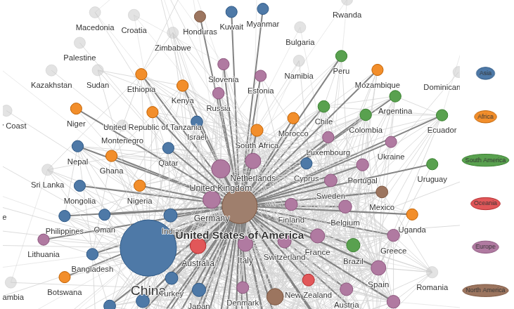

New dashboard for GIScience journal analysis
New dashboard for journal analysis
Building on the 2024 publication, “Assessing publication trends in selected GIScience journals” in IJGIS, the GATOR Lab is excited to release an interactive companion dashboard. This tool is designed to help the community navigate the evolving landscape of our field.
The dashboard provides a quantitative look at 24 core GIScience venues, tracking their evolution from 2018 through 2024 (with ongoing data updates in the future).

Why use this?
Selecting a publication venue is often based on “gut feeling” or a single metric like Impact Factor. This tool allows for a more refined, multi-dimensional assessment of the field:
- Meta Rankings: Compare journals using a composite index of eight different metrics (IF, CiteScore, SJR, SNIP, etc.) to see a more stable picture of “prestige”.
- Open Access Trends: Monitor the shift towards OA
- Collaboration Networks: Interactively explore how jurisdictions (countries) collaborate. Our data shows that while the field is growing, the Global South remains underrepresented… a gap we hope to highlight and help close to build an inclusive community.
- Cost vs. Impact: View the relationship between Article Processing Charges (APCs) and journal rankings to find the best “value” for your research.
Built for Open Science
In the spirit of open principles, the dashboard is built using Shinylive. This means it runs entirely in your web browser via WebAssembly, which in turn requires no backend server or 3rd party resources. It is private, and permanently accessible. The initial Shiny dashboard is a reimplementation and expansion of the 2024 IJGIS article and it was built by Jorge Corcino. Stay tuned as we are releasing the updated dataset and the source code of the dashboard very soon.
A word to the wise
We want to be clear about our view on using journal metrics to evaluate research impact. Quite frankly, we are not a fan of them. However, we need to be realistic and understand that it is a common practice in the academic community to use them. Think about going up for promotion, demonstrating the impact of your work, or justifying funding applications. Most of these decisions rely on some sort of metrics, and journal metrics are a common choice, so in a sense they are a necessary evil. While we may fundamentally disagree with putting to much emphasis on journal metrics, a lot of us are still at the mercy of them and therefore we are releasing this dashboard to build a better, more holistic understanding of the GIScience journal landscape.
On the bright side, better approaches to assess research impact are rapidly emerging, and we hope to see more of them in the future. A good resource to get started is the San Francisco Declaration on Research Assessment that recognizes and formalizes the need to improve the ways in which the outputs of scholarly research are evaluated.
With all its flaws, we still hope that our GIScience journal assessment dashboard will serve as a useful resource for everyone from students selecting their first submission venue to senior researchers optimizing publication strategies to maximize the impact of their work.
Explore the dashboard here or launch the Full Screen version.